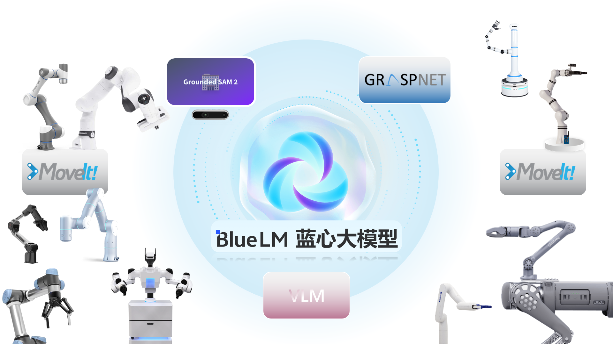

小U是一个基于vivo蓝心大模型的智能机器人操作Agent，旨在解决复杂桌面操作任务中的智能决策与精确执行问题。它的整个系统采用能力解耦的设计理念，将蓝心大模型的高层语义理解与策略规划能力、视觉基础模型的精确感知能力、专用抓取模型的位姿生成能力、视觉语言模型的空间理解能力以及路径规划模块的安全轨迹生成能力有机结合。
通过构建协同工作框架，整个系统能够在无需特定任务微调的情况下，有效处理各种复杂的桌面操作任务。这种非端到端的架构最大化利用了各模块的优势，同时激发了视觉语言模型在空间理解与决策方面的能力，显著提高了系统的鲁棒性、泛化性和执行效率。